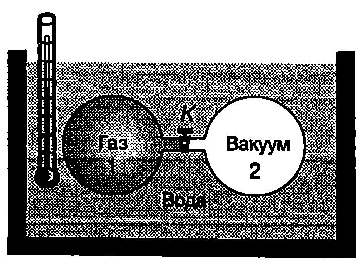
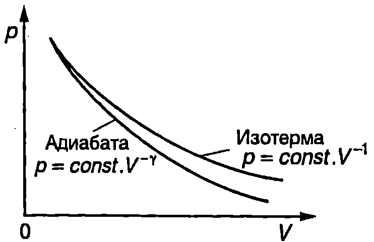

Закон на Джаул
Вътрешната енергия е функция на състоянието на термодинамичната система и съгласно с втория постулат на термодинамиката се определя от външните параметри и температурата. В случай на проста система само с един външен параметър (обем V) вътрешната енергия е функция на обема и на температурата \eqref{eq:31.1}
$$U = U(V,T) $$
Гей-Люсак, а по-късно и Джаул, провеждат серия от опити, за да установят как вътрешната енергия на газовете зависи от техния обем. Използваната от Джаул опитна постановка е показана схематично на Фиг. \ref{fig:31.1}. Два еднакви съда с твърди стени са поставени във водна вана. Единият съд е запълнен с въздух, а другият е вакуумиран. Измерва се началната температура $T_0$ на водата във ваната, след което се отваря кранът $K$. Въздухът от съд 1 свободно се разширява, при което не извършва работа, защото няма външни сили, които да му пречат да запълни обема на втория съд. След установяване на термодинамично равновесие отново се измерва температурата на водата във ваната. Опитите показват, че тя е равна на началната температура $T_0$. Следователно при разгледания процес въздухът не обменя топлина с водата и не извършва работа. Температурата на въздуха също остава постоянна, докато обемът му нараства 2 пъти. Оттук Джаул стига до извода, че в границите на точността, с която е направен опитът, вътрешната енергия на въздуха зависи единствено от температурата и не зависи от обема
$$U = U(T) $$
Уравнение \eqref{eq:31.2} изразява закона на Джаул за вътрешната енергия на идеален газ:
Вътрешната енергия на определена маса идеален газ не зависи от обема на газа, а се определя само от температурата.
Видът на функцията $U(T)$ се определя експериментално или по методите на молекулно-кинетичната теория.
В периода от 1852 до 1862 г. Джаул съвместно с Уилям Томсън (лорд Келвин) (1824-1907) провеждат серия от прецизни експерименти, които показват, че вътрешната енергия на реалните газове зависи не само от температурата, но и от техния обем. Колкото по-разреден е един газ, толкова по-слаба е зависимостта на вътрешната енергия от обема на газа.
Топлинни капацитети
Количеството топлина, необходимо за повишаване температурата на дадено тяло с един градус, се нарича топлинен капацитет $C$ на тялото. По определение
$$C’ = \frac{\delta Q}{dT} $$
където $dT$ е увеличението на температурата на тялото, след като е погълнало безкрайно малкото количество топлина $\delta Q$. Топлинният капацитет на телата зависи от тяхната маса и от вида на веществото. За Да се характеризират веществата, от които са изградени телата, се използват величините специфичен топлинен капацитет $c$ (топлинен капацитет на $m = 1$ kg от веществото - означава се с малка буква $c$)

Опит на Джаул.
`Фиг. 31.1`
$$c = \frac{C’}{m} = \frac{\delta Q}{mdT} $$
и моларен топлинен капацитет $C$ (топлинен капацитет на $n = 1$ mol от веществото означава се с главна буква $C$)
$$C = \frac{C’}{n} = \frac{\delta Q}{ndT} $$
Съгласно с уравнението на първия принцип на термодинамиката \eqref{eq:30.8} част от погълнатото количество топлина $\delta Q$ отива за увеличаване $dU$ на вътрешната енергия, а друга част за извършване на работа $\delta A$. Съотношението между $dU$ и $\delta A$ зависи от вида на процеса. Колкото по-малко работа извършва тялото (термодинамичната система) при поглъщането на количество топлина $\delta Q$, толкова по-голяма част от $\delta Q$ отива за увеличаване на вътрешната енергия, а оттам и на температурата. Следователно в този случай, съгласно с формула \eqref{eq:31.3}, топлинният капацитет е по-малък. Обратно, процесите, при които се извършва повече работа, се характеризират с по-голям топлинен капацитет.
И така, топлинните капацитети зависят не само от вида на веществото, но и от начина, по който става нагряването, т.е. от вида на процеса. Специален интерес представляват случаите, когато нагряването става без да се изменя обемът (изохорен процес) или при постоянно налягането (изобарен процес).
Топлинни капацитети при постоянен обем ($C_V$) и при постоянно налягане ($C_p$)
Идеален газ е затворен в съд с твърди стени. На газа се предава количество топлина $\delta Q$, при което той се нагрява без да изменя обема си ($dV = 0$). Газът не извършва работа и съгласно с уравнението на първия принцип на термодинамиката \eqref{eq:30.9} погълнатото количество топлина е равно на увеличението на вътрешната енергия на газа: $\delta Q = dU$. Тогава уравнение \eqref{eq:31.5} добива вида
$$C_V = \frac{\delta Q}{ndT} = \frac{dU}{ndT} $$
Величината $C_V$ се нарича моларен топлинен капацитет при постоянен обем или моларен изохорен топлинен капацитет. Опитът показва, че изохорният топлинен капацитет $C_V$ на разредените (идеални) газове в широк температурен интервал (например за водорода, азота и кислорода от 100 К до 1000 К) практически не зависи от температурата. Ако приемем $C_V$ за константа, след интегриране на уравнението $dU = n C_V dT$ определяме вътрешната енергия на $n$ mol идеален газ $$U = nC_V T, $$ където сме приели, че $U = 0$ при $T = 0$. Нека сега $n$ mol идеален газ е затворен в цилиндър с бутало, което може да се движи без триене. Газът получава количество топлина $\delta Q$, при което бавно се се разширява, така че налягането му не се променя - остава равно на външното налягане $p = const$. Съгласно със закона на Джаул вътрешната енергия на идеалния газ не зависи от обема. Затова изменението на вътрешната енергия при разширението на газа се определя само от изменението $dT$ на температурата и може да запише по същия начин, както при нагряване без изменение на обема: $dU = n C_V dT$. Елементарната работа $\delta A = pdV$ при изобарното разширение на газа се изразява чрез изменението на температурата $dT$, като се диференцират двете страни на уравнението за състоянието на идеалния газ $pV = nRT$ $$pdV + Vdp = nRdT.$$
Тъй като процесът е изобарен, $p = const$ и $dp = 0$, за елементарната работа се получава $\delta A = pdV = nRdT$.
Заместваме $$\delta Q = dU + \delta A = nC_VdT + nRdT$$ в уравнение \eqref{eq:31.5} и определяме моларния топлинен капацитет на идеалния газ при постоянно налягане $$C_p = \frac{\delta Q}{ndT} \frac{nC_VdT+nRdT}{ndT} = C_V+R. $$
Ще подчертаем, че за идеален газ различието в стойностите на двата топлинни капацитета ($C_p > C_V$) се дължи единствено на работата, която в случая на изобарно разширение газът извършва, за да преодолее постоянното външно налягане. За идеален газ $$C_p-C_V = R = 8,!314~\mathrm{J/(mol\cdot K)}. $$
Това съотношение е получено от Майер, който през 1842 година пръв измерва механичния еквивалент на топлината, и в негова чест е наречено уравнение на Майер. Например при калориметрични измервания на топлинните капацитети на въздуха се получава: $C_p - C_V = 1,!986$ cal/(mol.K).
От друга страна, газовата константа $R$ се определя по независим начин в механични единици: $R = 8,!314$ J/(mol-K). След това от уравнението на Майер \eqref{eq:31.9} се пресмята механичният еквивалент на топлината: 1 cal = 4,186 J.
Ще отбележим, че поради неточните данни, с които разполагал, Майер получава значително по-малка стойност за механичния еквивалент на топлината от представената по-горе истинска стойност. Първите точни измервания, както беше отбелязано, извършва Джаул.
Макар че е точно вярно само за идеалните газове, уравнението на Майер \eqref{eq:31.9} с достатъчно голяма точност може да се използва и при реалните газове. Течностите и твърдите вещества обаче се разширяват много малко при нагряване. Затова при тях разликата между изобарния и изохорния топлинен капацитет е значително по-малка. Например при стайна температура и нормално атмосферно налягане моларният изобарен топлинен капацитет $C_p$ на водата е само с около 0,003% по-голям от моларния изохорен топлинен капацитет $C_V$. Затова в повечето случаи е достатъчно течностите и твърдите тела да се характеризират само с изобарния топлинен капацитет $C_p$, чиито стойности по-лесно се измерват експериментално. В таблица 31.1 са дадени стойностите на $C_p$ за някои химични елементи и съединения.
\begin{table}
\begin{tabular}{cc}
Вещество& $C_p$, $\mathrm{J/(mol\cdot K)}$\\
Азот N$_2$ (г)& 29,12\\
Алуминий& 24,35\\
Вода H$_2$O (т)& 75,3\\
Вода H$_2$O (г)& 33,6\\
Живак (т)& 27,98\\
Кислород O$_2$ (г)& 29,38\\
Мед& 24,43\\
Никел& 26,07\\
Селен Se$_2$ (г)& 35,40\\
Сребро&26,25\\
Хлор Cl$_2$ (г)&33,94\\
Цинк&25,44\\
Въглероден оксид СО (г)&29,1\\
Въглероден диоксид CO$_2$ (г)&37,1\\
\end{tabular}
Моларен изобарен топлинен капацитет $C_p$ при температура 298 К и налягане 1 atm = 101,3 kPa. Газовете и течностите отбелязани съответно с (г) и (т).
\label{table:31.1}
\end{table}
Пример 31.1
Като използвате данните от табл. 31.1, определете специфичните топлинни капацитети на водата и на водните пари. Моларната маса на водата е $M = 0,!018$ kg/mol. \end{psexample}
Решение
Изразяваме масата $m$ на дадено количество (п mol) вещество чрез моларната му маса $M$, $m=nM$, и заместваме $m$ във формула \eqref{eq:31.4}, чрез която се въвежда величината специфичен топлинен капацитет $$c = \frac{\delta Q}{mdT} = \frac{\delta Q}{nMdT} = \frac{C}{M},$$ където $\displaystyle C = \frac{\delta Q}{ndT}$ е моларният топлинен капацитет. За водата: $$c = \frac{75,!3~\mathrm{J/mol K}}{0,!018~\mathrm{kg/mol}} = 4180~\mathrm{\frac{J}{kg.K}}.$$
Специфичният изобарен топлинен капацитет на водните пари е: $$c_p = \frac{33,!6~\mathrm{J/mol K}}{0,!018~\mathrm{kg/mol}} = 1870~\mathrm{\frac{J}{kg.K}}.$$
Ако разглеждаме водните пари като идеален газ, с помощта на уравнението на Майер можем да определим и техния изохорен специфичен топлинен капацитет $$c_V = \frac{C_V}{M} = \frac{C_p - R}{M} = c_p - \frac{R}{M} = 1870~\mathrm{\frac{J}{kg.K}} - \frac{8,!31~\mathrm{J/mol K}}{0,!018~\mathrm{kg/mol}} =1410~\mathrm{\frac{J}{kg.K}}.$$
Пример 31.2
Дадено количество идеален газ се нагрява при такива условия, че налягането на газа се изменя правопропорционално на неговия обем: $p =aV$, където $a$ е константа. Изразете моларния топлинен капацитет $C$ на газа при този процес чрез изохорния моларен топлинен капацитет $C_V$ на газа и универсалната газова константа $R$. \end{psexample}
Решение
В уравнението за състоянието на идеалния газ $pV = nRT$ заместваме $p = aV$ и получаваме $aV^2= nRT$. Диференцираме двете страни на това уравнение $$2aVdV = nRdT\text{ или }pdV = \frac{1}{2}nRdT,$$ където сме заместили обратно $aV$ с $p$. Търсеният моларен топлинен капацитет е $$C = \frac{\delta Q}{ndT} = \frac{dU + pdV}{ndT} = \frac{nC_V dT + nRdT/2}{ndT} = C_V+\frac{R}{2}$$
Пример 31.3
Колко е вътрешната енергия на въздуха в стаята? Разгледайте въздуха като идеален газ с изохорен моларен топлинен капацитет $C_V = 5/2 R$, където $R$ е универсалната газова константа. Обемът на стаята е $V = 20$ m$^3$, налягането е равно на атмосферното налягане $p = 1.10^5$ Pa, а температурата е 20°C. Ще се измени ли вътрешната енергия на въздуха в стаята, ако се увеличи температурата му? \end{psexample}
Решение
Вътрешната енергия на $n$ мола идеален газ е $U = nC_VdT$. От уравнението за състоянието на газа $pV = nRT$ изразяваме $nT = pV/R$ и го заместваме във формулата за вътрешната енергия. Получаваме
$$U= \frac{C_VPV}{R} = \frac{5}{2} pV = 2,!5(1.10^5~\mathrm{Pa}) (20\mathrm{m^3}) = 5.10^6\mathrm{J}.$$
Тъй като при нагряването обемът на стаята $V$ не се променя, а налягането $p$ остава равно на външното атмосферно налягане, от получения резултат следва, че вътрешната енергия на въздуха в стаята също не се променя. Част от въздуха е напуснал стаята, но останалият въздух има по-висока температура и единица маса от него има по-голяма вътрешна енергия. Ще отбележим, че този резултат е верен само в рамките на опростения модел на идеалния газ. В действителност обаче въздухът е реален газ, чиито молекули имат потенциална енергия, а освен това към вътрешната енергия се включва и вътрешномолекулната, атомната и ядрената енергия. Затова поради намаляването на масата на въздуха в стаята, вътрешната му енергия също намалява.
Адиабатен процес
Да разгледаме термодинамична система, която е отделена от околната среда с топлонепроницаема обвивка. Такава система, която не може да обменя топлина с околната среда ($\delta Q = 0$), се нарича адиабатно изолирана система. Топлонепроницаемата обвивка се нарича адиабатна обвивка. Термодинамичните процеси - равновесни или неравновесни, които протичат в адиабатно изолирана система, се наричат адиабатни процеси. Най-важната особеност на адиабатните процеси е, че при тях системата не обменя количество топлина с околната среда. Адиабатно изолирана система може да се намира единствено в механично взаимодействие с околната среда: да извършва положителна или отрицателна работа върху околните тела. Редица реални процеси с добро приближение могат да се разглеждат като адиабатни, независимо че не винаги е изпълнено изискването за топлинна изолация от околната среда. Такива като правило са процесите, които протичат достатъчно бързо, така че обмененото по време на процеса количество топлина е пренебрежимо малко в сравнение с извършената работа. Напомпването на автомобилна гума, свиването на горивната смес в двигателите с вътрешно горене, свиването и разширението на въздуха при разпространението на звукови вълни са примери за адиабатни процеси.
Уравнение на Поасон
Уравнението, което описва равновесните адиабатни процеси при идеалния газ, се извежда от уравнението за състоянието на идеалния газ и от уравнението на първия принцип на термодинамиката. Да разгледаме $n$ mol идеален газ, затворен в цилиндър с бутало. Стените на цилиндъра и буталото са топлонепроницаеми. Газът бавно се разширява, без да обменя топлина с околната среда ($\delta Q = 0$). Уравнението на първия принцип на термодинамиката в този случай се записва във вида
$$0 = dU + pdV = nC_V dT +pdV. $$
Диференцираме двете страни на уравнението за състоянието на идеалния газ $pV = nRT$ и получаваме
$$pdV+ Vdp = nRdT. $$
От уравнение \eqref{eq:31.11} изразяваме $dT$ и го заместваме в \eqref{eq:31.10}. След елементарни преобразования получаваме
$$(Cy+ R)pdV+ CVdp = 0. $$
От уравнението на Майер \eqref{eq:31.9} заместваме $C_V + R = C_p$ и делим двете страни на равенство \eqref{eq:31.12} на $C_V$. Получаваме $$\frac{C_p}{C_V}pdV+Vdp = \gamma pdV +Vdp = 0, $$ където безразмерната величина $$\gamma = \frac{C_p}{C_V} $$ се нарича коефициент на Поасон. Диференциалното уравнение \eqref{eq:31.13} описва равновесния адиабатен процес с идеален газ. След разделяне на променливите $$\gamma \frac{dV}{V} = -\frac{dp}{p}$$ и интегриране се получава $$pV^\gamma = const. $$
Уравнение \eqref{eq:31.15} се нарича уравнение на Поасон. На $pV$-диаграма адиабатният процес се представя с хиперболата $p = const. V^{-1}$, наречена адиабата. Тъй като $\gamma > 1$, адиабатата е по-стръмна от изотермата $p = const. V^{-1}$. На Фиг. \ref{fig:31.2} са показани два процеса с дадено количество идеален газ, започващи от едно и също състояние 1 — адиабатен процес и изотермен процес. Обърнете внимание, че адиабатата е по-стръмна и лежи под изотермата.

`Фиг. 31.2`
Пример 31.4
Запишете уравнението на Поасон \eqref{eq:31.15} в променливи ($T$,$V$) и ($T$,$p$). \end{psexample}
Решение
От уравнението за състоянието на идеалния газ изразяваме налягането $p = nRT/V$ и го заместваме в уравнението на Поасон $$\frac{nRT}{V} V^\gamma = nRTV^{\gamma-1} = const.$$
Произведението $nR$ за даденото количество газ е константа, затова, след като разделим двете страни на полученото равенство на $nR$, от дясната му страна ще получим отново константа (с друга числена стойност, но това в случая не е съществено) $$pV^{\gamma-1} = const. $$
По аналогичен начин след заместване на $V = nRT/p$ се получава
$$Tp^\frac{1-\gamma}{\gamma} = const. $$
Изменение на вътрешната енергия при адиабатен процес
Да разгледаме термодинамична система, която преминава от равновесно състояние 1 с вътрешна енергия $U_1$ в равновесно състояние 2 с вътрешна енергия $U_2$ чрез адиабатен процес (процесът може да бъде и неравновесен). Тъй като при адиабатен процес системата не обменя количество топлина с околната среда ($Q = 0$), уравнението на първия принцип на термодинамиката има вида $$0 = U_2 - U_1 + A$$ или $$A = -(U_2 - U_1) = -\Delta U,$$ където $\Delta U$ е изменението на вътрешната енергия на системата. Следователно работата $A$, която една термодинамична система извършва при адиабатен процес, е равна на взетото със знак минус изменение на вътрешната енергия на системата. Когато системата върши положителна работа (адиабатно разширение, $A > 0$), нейната вътрешна енергия намалява ($\Delta U < 0$). При адиабатно разширение термодинамичната система извършва положителна работа върху околните тела за сметка на своята вътрешна енергия. Например, ако дадено количество газ се разширява адиабатно, вътрешната му енергия намалява и температурата на газа се понижава.
Обратно, при адиабатно свиване $A < 0$ и $\Delta U > 0$ — термодинамичната система увеличава вътрешната си енергия в резултат на положителната работа $A’$, която извършват външните сили ($A’ = -A > 0$). При адиабатно свиване вътрешната енергия на газовете нараства и те се нагряват.
Пример 31.5
Дадено количество ($n$ mol) идеален газ извършва равновесен адиабатен процес от състояние с обем $V_1$ и налягане $p_1$ до състояние с обем $V_2$ ($V_2 > V_1$). Определете работата на газа $A$ и изменението на вътрешната му енергия $\Delta U$. \end{psexample}
Решение
Да означим с $T_1$ началната температура на газа, а с $T_2$ — крайната температура. Тъй като процесът е адиабатен, газът не обменя топлина с околната среда и съгласно с уравнението на първия принцип на термодинамиката
$$A = U_1 - U_2 =nC_V(T_1 - T_2),$$
където сме отчели, че вътрешната енергия на $n$ mol идеален газ е $U = nC_V T$. Ще обърнем внимание, че горното уравнение изразява работата, която извършва $n$ mol идеален газ при преминаване от състояние с температура $T_1$ в състояние с температура $T_2$ независимо от това дали адиабатният процес е равновесен или е неравновесен. Уравнението на Поасон обаче, което ще използваме по-нататък, описва само равновесните адиабатни процеси с идеален газ.
От уравнението за състоянието на идеалния газ $pV = nRT$ изразяваме температурата $T$ и я заместваме в полученото уравнение за работата на газа $$A = n C_V \left(\frac{p_1 V_1}{nR} - \frac{p_1 V_1}{nR}\right) = C_V \frac{p_2 V_2}{nR} \left(1 - \frac{p_2 V_2}{p_1 V_1}\right).$$
От уравнението на Поасон изразяваме $p_2/p_1 = (V_1/V_2)^\gamma$ и го заместваме в горното равенство. Получаваме $$A = C_V \frac{p_1 V_1}{R}\left[1 - \left(\frac{V_1}{V_2}\right)^{\gamma - 1}\right]$$
Тъй като по условие $V_2 > V_1$, то $A > 0$: газът се разширява адиабатно и извършва положителна работа за сметка на вътрешната си енергия, която намалява, $\Delta U = -A$.
Задачи
-
Определете изменението на вътрешната енергия на $n =$ 5 mol въздух, когато температурата му нарасне с $\Delta T = 20$ К. Изохорният моларен топлинен капацитет на въздуха е $C_V = 2,!5$, където $R = 8,!31$ J/mol.K е универсалната газова константа.
-
Колко джаула количество топлина са необходими, за да се нагреят от температура 100°C до температура 110°C 200 g водни пари, намиращи се при атмосферно налягане?
Указание. Използвайте резултата от пример 31.1.
- Един мол идеален газ се нагрява при постоянно налягане от температура 0°C до температура 100 °C, при което поглъща количество топлина $Q = 3,!35$ kJ. Определете:
а) стойността на коефициента на Поасон $\gamma$ за този идеален газ;
б) изменението на вътрешната енергия на газа;
в) работата на газа.
-
Докажете, че вътрешната енергия на дадено количество идеален газ с обем $V$ и налягане $p$ е $$U= -pV^{\gamma-1}$$ където $y$ е коефициентът на Поасон за газа.
-
Някакво количество идеален газ с коефициент на Поасон $\gamma = 5/3$ се разширява при постоянно налягане $p = 1.10^5$ Pa, при което обемът му се изменя от $V_1 = 0,!2$ m$^3$ до $V_2 = 0,!3$ m$^3$. Определете:
а) изменението на вътрешната енергия на газа;
б) работата на газа;
в) погълнатото от газа количество топлина.
-
Идеален газ с начална температура $T_1 = 300$ К се свива адиабатно, докато обемът му се намали 3 пъти. Определете крайната температура $T_2$ на газа (y = 5/3).
-
Идеален газ с начална температура $T_1 = 300$ К се разширява адиабатно, докато налягането му се намали 3 пъти. Определете крайната температура $T_2$ на газа ($\gamma =5/3$).
-
$n = 2$ mol идеален газ, който се намира при температура $T_1 = 300$ К, се разширява адиабатно, при което обемът му нараства 2 пъти. Определете работата на газа, ако изохорният му моларен топлинен капацитет е $C_V = 1,!5R$, където $R = 8,!31$ J/(mol-K) е универсалната газова константа.